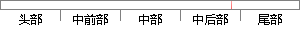

图 所示为验证集的K-S曲线，横坐标为阈值，纵坐标为在不同阈值下的TPR和FPR，ks数值为TPR与FPR差值最大的地方，即图中的蓝线，K-S曲线可以很好的表示模型对正负样本的区分能力。
片段位置图

相似结果|
1
原句片段：图 所示为验证集的K-S曲线，横坐标为阈值，纵坐标为在不同阈值下的TPR和FPR，ks数值为TPR与FPR差
相似片段 1：我们以FPR为横坐标,TPR为纵坐标,把不同的点连成曲线...常用的模型评价还有K-S曲线,它和ROC曲线的画法异曲...从K-S曲线就能衍生出KS值,KS=max(TPR-FPR),即是...
|
※ 片段修改建议 ※
近似词参考：- 不同：分歧 差别
- 地方：处所
- 表示：暗示 默示 示意 透露表现 表现
- 模型：模子
- 区分：辨别 区别
- 能力：本领
系统自动生成语句：图 所示为验证集的K-S曲线，横坐标为阈值，纵坐标为在分歧阈值下的TPR和FPR，ks数值为TPR与FPR差值最大的处所，即图中的蓝线，K-S曲线可以很好的暗示模子对正负样本的辨别本领。
注：本片段修改建议为系统自动生成，仅供参考。